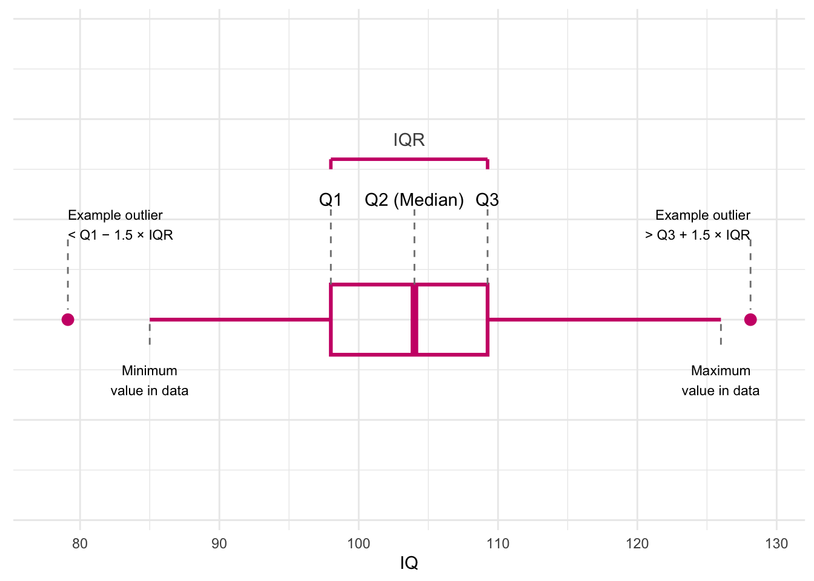
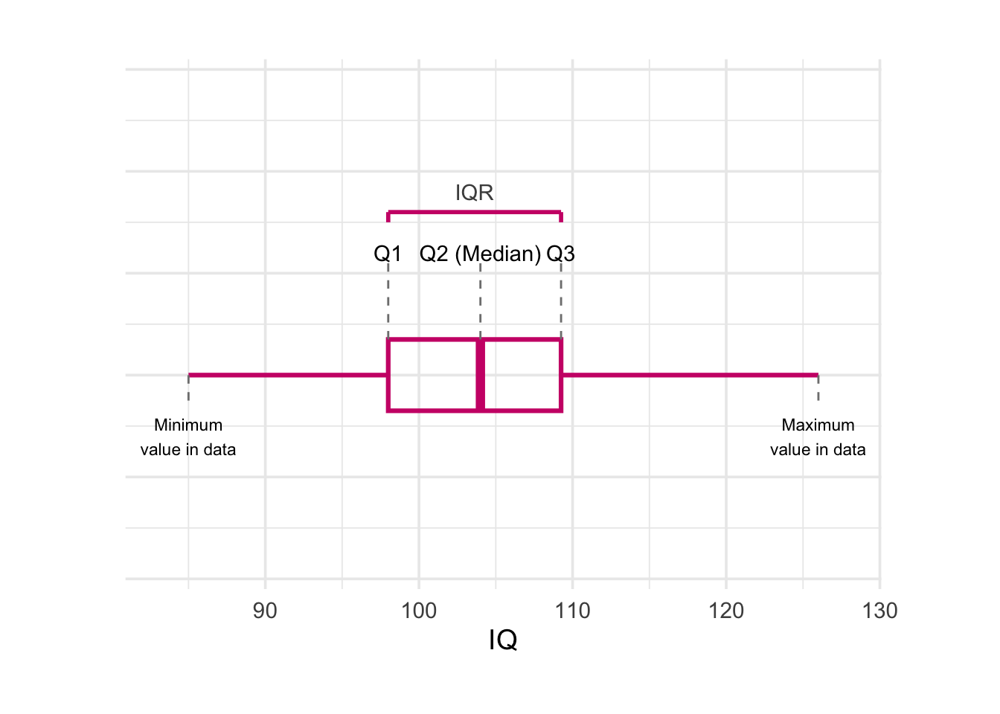
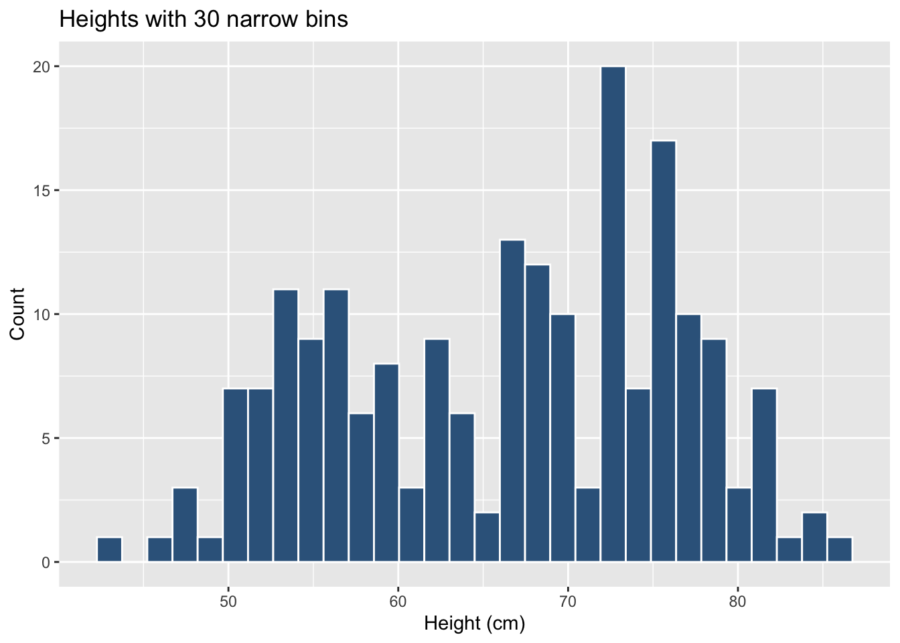

In earlier weeks we focused on categorical data and on how to describe it using:
tables and bar plots
measures of central tendency such as the mode and the median
simple measures of spread such as the range and quartiles
This week, we slow down and revisit the same ideas, but now for continuous (numeric) data.
We will:
look at how to visualise continuous data with histograms
understand what the mean really is and how to calculate it
build up measures of spread: deviations, variance, and standard deviation
briefly describe the shape of a distribution (skew and kurtosis)
2. Central tendency
In the following examples, we are going to use data from 200 students on their IQ scores, study habits, sleep, stress, and related variables. These data are stored in the file Lecture1_data.csv, which we have already read in as students. Below is a quick numerical summary of some of the continuous variables:
students |>select(IQ, Study_hours, Sleep_hours, Overall_mark) |>summary()
IQ Study_hours Sleep_hours Overall_mark
Min. : 85.0 Min. :2.100 Min. :4.200 Min. :43.00
1st Qu.: 98.0 1st Qu.:4.500 1st Qu.:6.000 1st Qu.:57.00
Median :104.0 Median :5.900 Median :6.800 Median :68.00
Mean :103.6 Mean :5.845 Mean :6.758 Mean :66.24
3rd Qu.:109.2 3rd Qu.:7.200 3rd Qu.:7.600 3rd Qu.:74.25
Max. :126.0 Max. :9.900 Max. :8.600 Max. :86.00
This summary shows basic information (minimum, quartiles, median, mean, and maximum) for some of the continuous variables we will use.
2.1 Revisiting mode and median
For central tendency we shall use:
Mode: the most frequently occurring value.
Median: the value for which 50% of observations are lower and 50% are higher (the middle value when data are ordered).
Mean: the arithmetic average (sum of values divided by the number of values).
We previously applied these ideas to categorical variables, but they can also be used for numeric variables. The table below summarises which measures are appropriate for different types of data.
Mode
Median
Mean
Nominal (unordered categorical)
✓
✗
✗
Ordinal (ordered categorical)
✓
✓
? (depends on context)
Numeric continuous
✓
✓
✓
For numeric variables there can be many different values, so the mode is not always very informative. However, we can still calculate it if we wish.
Below we look at the most frequent value (the mode) of the IQ variable in the students data.
students |>count(IQ, name ="n") |>arrange(desc(n))
The first row of this output gives the most common IQ score in the sample.
Median for the IQ scores
Recall that the median is found by ordering the data from lowest to highest, and finding the mid-point.
In the students dataset we have IQ scores for 200 participants.
We find the median by ranking them from lowest to highest IQ and taking the mid-point between the two central scores.
We can also use the median() function:
median(students$IQ)
[1] 104
Mean
One of the most frequently used measures of central tendency for numeric data is the mean.
Mean:
The mean is calculated by summing all of the observations together and then dividing by the total number of observations (n).
When we have sampled some data, we denote the mean of our sample with the symbol\(\bar{x}\) (sometimes called “x-bar”).
The formula is:
\[
\bar{x} = \frac{\sum_{i = 1}^{n} x_i}{n}
\]
Where:
\(\bar{x}\) = estimate of the mean of the variable \({x}\)
\(x_i\) = individual values of \({x}\)
\(n\) = sample size
Samples and Populations
Statistics is about drawing conclusions about a population from a smaller set of sampled data.
A number we calculate from a sample is an estimate of the corresponding quantity in the population.
Sample
Population
Number of observations
\(n\)
\(N\)
Mean
\(\bar{x} = \frac{\sum_{i=1}^{n} x_i}{n}\)
\(\mu = \frac{\sum_{i=1}^{N} x_i}{N}\)
In practice we almost always have a sample, so we work with \(\bar{x}\) and \(n\).
Calculating the mean for IQ
We can do the calculation by summing the IQ values and dividing by the number of students:
This produces a small table with one row and two columns: the average IQ score and the average overall mark in our sample.
3 Measuring spread: variance, and standard deviation
Knowing the mean is not enough. Two classes can have the same average mark but very different spread:
in one class, everyone is close to the mean
in the other, some students do extremely well and others very poorly
We therefore need a way to describe how much values vary around the mean.
For each observation we can look at how far it is from the mean. This difference is called a deviation:
Interquartile range
If we are using the median as our measure of central tendency and we want to discuss how spread out the spread are around it, then we will want to use quartiles (recall that these are linked: the quartile = the median).
We have already briefly introduced how for ordinal data, the 1st and 3rd quartiles give us information about how spread out the data are across the possible response categories. For numeric data, we can likewise find the 1st and 3rd quartiles in the same way - we rank-order all the data, and find the point at which 25% and 75% of the data falls below.
The difference between the 1st and 3rd quartiles is known as the interquartile range (IQR).
( Note, we couldn’t take the difference for ordinal data, because “difference” would not be quantifiable - the categories are ordered, but intervals are between categories are unknown)
In R, we can find the IQR as follows:
IQR(students$IQ)
[1] 11.25
# take the "students" dataframe |># summarise() it, such that there is a value called "median_IQ", which# is the median() of the "IQ" variable, and a value called "iqr_age", which# is the IQR() of the "age" variable.students |>summarise(median_IQ =median(IQ),iqr_IQ =IQR(IQ) )
The median IQ in this sample is 104.
This means that half of the students have an IQ below 104 and half have an IQ above 104.
The median is a measure of central tendency that is not affected by extreme values.
The interquartile range (IQR) for IQ is 11.25.
This means that the middle 50% of students (those between the 25th and 75th percentiles) have IQ scores that differ by 11.25 points.
The IQR is a measure of spread that tells us how tightly or loosely clustered the central half of the scores are.
In practical terms
An IQR of 11.25 suggests that IQ scores in this class are moderately clustered around the centre.
There is some variation, but most students fall within a relatively narrow band around the median.
Variance
If we are using the mean as our measure of central tendency, we can think about the spread of the data in terms of the deviations (the distance of each value from the mean).
Recall that the mean is denoted by \(\bar{x}\).
If we use \(x_i\) to denote the \(i^{\text{th}}\) value of \(x\), then the deviation for that value is:
\[
x_i - \bar{x}
\]
The sum of deviations from the mean is always zero
The deviations from the mean always add up to zero:
\[
\sum_{i = 1}^{n} (x_i - \bar{x}) = 0
\]
The mean acts like a centre of gravity:
positive deviations (where \(x_i > \bar{x}\)) are exactly balanced by negative deviations (where \(x_i < \bar{x}\)).
Because deviations always sum to zero, they cannot be used directly as a measure of spread.
To solve this, we square them. Squaring makes all deviations positive, and larger deviations become disproportionately larger.
The average squared deviation is called the variance, written \(s^2\).
Variance: \(s^2\)
The variance is defined as the average of the squared deviations from the mean:
contains (n) deviations, but once the mean \(\bar{x}\) is calculated, the deviations are not independent.
They must sum to zero, meaning only (n - 1) of them contain unique information.
Example with two values
Suppose we only have two observations, \(x_1\) and \(x_2\).
The sum of squared deviations is:
Even though there are two points, there is effectively one independent piece of information, so we divide by \(n - 1 = 1\).
More generally, with \(n\) data points, we divide by \(n - 1\).
Calculating the variance in R
var() function:
students |>summarise(variance_overall_mark =var(Overall_mark),variance_IQ =var(IQ) )
One difficulty in interpreting variance as a measure of spread is that it is expressed in units of squared deviations. It reflects the typical squared distance from a value to the mean. To bring the measure back into the same units as the original variable, we take the square root of the variance. This gives the standard deviation.
Standard Deviation: \(s\)
The standard deviation, denoted by \(s\), is an estimate of the typical distance of a value from the mean.
It is defined as the square root of the variance:
A boxplot gives a quick picture of how the data are spread out.It provides a useful way of visualising the interquartile range (IQR). Here’s what each part of this plot shows:

Quartiles (Q1, Q2, Q3)
Q1: 25% of the scores are below this value.
Q2 (Median): the middle score in the dataset.
Q3: 75% of the scores are below this value.
The dashed lines rise up from the box to show where each quartile sits.
The IQR (Interquartile Range)
IQR = Q3 − Q1
It shows the spread of the middle half of the scores.
The pink bracket at the top highlights this range.
The Box
The box stretches from Q1 to Q3.
The line inside the box marks the median (Q2).
This box tells you where most of the students’ IQ scores fall.
Whiskers (minimum and maximum values)
The whiskers show the smallest and largest values in the data that are not considered outliers.
The labels underneath show where these values are.
Possible outliers
A value is considered an outlier if it is:
below Q1 − 1.5 × IQR, or
above Q3 + 1.5 × IQR.
Understanding the 1.5 × IQR Rule
You may wonder where the “1.5” in the boxplot definition comes from.
The 1.5 × IQR rule was introduced by statistician John Tukey, the creator of the boxplot. He wanted a simple, distribution-free way to detect values that are unusually far from the rest of the data.
How the rule works:
Compute the interquartile range (IQR), which is Q3 − Q1.
Define two cut-off points, called fences:
Lower fence: Q1 − 1.5 × IQR
Upper fence: Q3 + 1.5 × IQR
Any value below the lower fence or above the upper fence is flagged as a potential outlier.
Why choose 1.5?
Tukey chose 1.5 because it works well across a wide variety of datasets:
Using 1 × IQR flags too many normal values as outliers.
Using 2 × IQR misses points that are genuinely unusual.
1.5 × IQR gives a balanced threshold that reliably identifies values far from the central bulk of the data.
This is why the 1.5 × IQR rule has become the standard in statistics and data science. :::
Our dataset has no real outliers, so the two pink points on the plot are just examples to help us see where outliers would appear.
The real dataset does not have outliers

Why this plot is helpful
A boxplot lets you quickly understand:
the middle of the data (median),
how spread out the scores are (IQR),
whether the distribution is balanced or skewed,
and whether any scores stand out as unusual.
Histograms
For categorical variables a bar plot works well because there are only a few distinct categories.
For a continuous variable such as Overall_mark, there may be many different values – sometimes every student has a slightly different mark.
If we tried to draw a bar for every distinct mark the plot would be messy and unreadable. Instead we group values into bins (ranges) and count how many observations fall within each bin. This gives a histogram.
The bin width (or, equivalently, the number of bins) can change the apparent shape of the histogram:
Few wide bins
# few wide binsggplot(students, aes(x = Overall_mark)) +geom_histogram(bins =5,colour ="white",fill ="steelblue4") +labs(x ="Height (cm)", y ="Count",title ="Heights with 5 wide bins")
Many narrow bins
# many narrow binsggplot(students, aes(x = Overall_mark)) +geom_histogram(bins =30,colour ="white",fill ="steelblue4") +labs(x ="Height (cm)", y ="Count",title ="Heights with 30 narrow bins")

The data have not changed, but the visual impression can. When interpreting a histogram, always keep in mind that the choice of bins is under the analyst’s control.
Understanding Histograms Using Study_hours and Sleep_hours
We can use histograms to compare how spread out two continuous variables are. Below, we look at:
Study_hours → wider spread
Sleep_hours → narrower spread
Even before plotting, we can quantify their variability using the mean and standard deviation:
students |>summarise(mean_study =mean(Study_hours),sd_study =sd(Study_hours),mean_sleep =mean(Sleep_hours),sd_sleep =sd(Sleep_hours) )
The standard deviation tells us how much values typically vary around the mean.
Study hours vary more (SD ≈ 1.8), whereas sleep hours vary less (SD ≈ 1.0).
‘Study_hours’ and ‘Sleep_hours’ show very different spreads.
Even though the averages are not too far apart, Study_hours has a much larger standard deviation, meaning students differ widely in how long they study each day. This gives the histogram a wider base.
In contrast, Sleep_hours has a smaller standard deviation, meaning most students sleep roughly similar amounts. The histogram is therefore taller and narrower, because many values cluster close together.
Histograms are helpful because they let us see these differences in spread, not just calculate them.
Density Plot
A density plot (or density curve) shows the shape of a distribution using a smooth curve instead of bars. The y-axis represents density, and the total area under the curve equals 1.
Use a histogram when you want to count how many observations fall in particular ranges. Use a density plot when you want to understand the overall shape of a distribution without worrying about bin choices. Using both together often gives the clearest picture.
5 Skewness
The purpose of this figure is to illustrate how the shape of a distribution affects the relationship between the mean, median, and mode. These three measures of central tendency behave differently depending on whether a distribution is positively skewed, symmetric, or negatively skewed.
1. What is skewness?
Skewness is a measure of asymmetry in a distribution:
Positive skew (right-skewed)
The distribution has a long tail on the right.
A few very large values pull the mean upward.
Symmetric distribution
Data are balanced around the centre.
Mean = Median = Mode.
Negative skew (left-skewed)
The distribution has a long tail on the left.
A few very small values pull the mean downward.
Skewness is important because it affects which measure of central tendency best represents the “centre” of the data.
2. Why do the mean, median, and mode shift?
The mode always occurs at the highest peak—where most observations are concentrated.
The median is the midpoint value when the data are ordered.
The mean is sensitive to extreme values (outliers).
As a result:
In positive skew: Mode < Median < Mean
(the tail on the right pulls the mean to the right)
In symmetric distributions: Mode = Median = Mean
In negative skew: Mean < Median < Mode
(the tail on the left pulls the mean to the left)
The ordering of these three values tells us about the direction of skew.
3. How to interpret the figure
This visual helps you identify skew by looking at:
The direction of the tail
Where the mean, median, and mode sit relative to each other
The height of the density curve, which shows where values are most common
Being able to visually diagnose skew is essential in real data analysis because skew affects:
Which summary statistics to use
How reliable the mean is
Which statistical models are valid
How to correctly describe the data distribution
6 Choosing appropriate summaries
A quick guide for which measures to use:
Variable type
Centre (central tendency)
Spread (dispersion)
Categorical (nominal)
Mode
Frequency table
Categorical (ordered)
Mode / Median
Range / IQR
Continuous (numeric)
Mean / Median
Variance & Standard deviation (plus IQR)
Counts
Mode / Mean
Range, variance, standard deviation
7 Glossary
Interquartile Range (IQR): The 3rd quartile minus the 1st quartile; the range of the middle 50% of the data.
Mean: The sum of all observations divided by the total number of observations; the arithmetic average.
Median: The middle value of an ordered dataset; 50% of observations lie below and 50% above.
Mode: The most frequently occurring value in a dataset.
Deviation: The distance from an observation to the mean value.
Variance: The average squared distance of observations from the mean value.
Standard deviation: The square root of the variance; the typical distance of observations from the mean.
Quartiles (Q1, Q2, Q3): Values that split ordered data into four equal parts (25%, 50%, 75%).
Interquartile fences: The cut-offs Q1 − 1.5 × IQR and Q3 + 1.5 × IQR used to flag potential outliers.
Outlier: An observation that lies far from the bulk of the data, often beyond the 1.5 × IQR fences.
Boxplot: Displays the median, quartiles, the IQR, and any potential outliers.
Histogram: Shows the frequency of values that fall within bins of an equal width.
Bin width: The size of the intervals used to group values in a histogram.
Density curve / density plot: A smooth curve reflecting the distribution of a variable, where the total area under the curve is 1.
Skew / Skewness: A measure of asymmetry in a distribution (positive/right skew or negative/left skew).
Positive skew: A distribution with a long tail to the right; extreme high values pull the mean to the right of the median.
Negative skew: A distribution with a long tail to the left; extreme low values pull the mean to the left of the median.
Spread / dispersion: How much the values of a variable vary around a central value.
Continuous variable: A numeric variable that can take many possible values on a scale (e.g., IQ, hours of sleep).
Categorical variable: A variable that records group membership or labels (e.g., degree programme, gender).
summarise() To summarise variables into one or more values according to whatever calculation we give it.
mean() To calculate the mean of a numeric variable.
median() To calculate the median of a numeric variable.
IQR() To calculate the interquartile range for a numeric variable.
sd() To calculate the standard deviation of a numeric variable.
var() To calculate the variance of a numeric variable.
min() / max() To obtain the smallest and largest values of a numeric variable.
count() To count how many times each value or category occurs.
ggplot() To start a plot using the ggplot2 grammar of graphics.
geom_histogram() To add a histogram to a ggplot.
geom_boxplot() To add a boxplot to a ggplot.
geom_density() To add a density curve to a ggplot.
geom_vline() To add a vertical reference line (e.g., for a mean or median) to a ggplot.